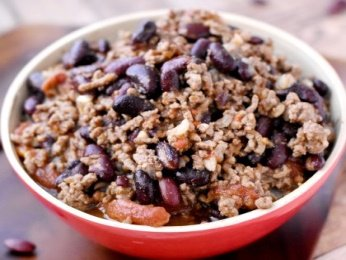

Chili con carne
Ingredients
4×
- 1 oignon
- 1 gousse d'ail
- huile
- 400 g de viande hachée
- poudre de chili
- 400 g de haricots rouges
- 400 g de tomates pelées
- sel
- poivre

Préparation
Étape 1
Hacher 1 oignon et 1 gousse d'ail, puis les fondre dans un peu d’huile dans une cocotte.
Étape 2
Ajouter 400 g de viande hachée et la colorer. Ajouter de la poudre de chili selon le goût.
Étape 3
Ajouter 400 g de haricots rouges égouttés et 400 g de tomates pelées. Assaisonner de sel et de poivre, puis laisser frémir 20min.